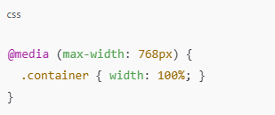
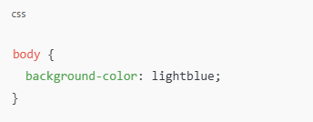

6. Avoid !important
The !important rule in CSS is used to add more importance to a property/value than normal. In fact, if you use the !important rule, it will override ALL previous styling rules for that specific property on that element!
7. Keep It Responsive
Use relative units (em, rem, %) instead of fixed pixels.
Use media queries for different screen sizes:
8. Use CSS for Styling
Keep HTML for structure, CSS for design: 9. Optimize Performance
- Minify CSS before deployment.
- Use CSS variables instead of repetitive values.
- Combine similar rules to reduce redundancy.
Simple, clean, and efficient! 🚀